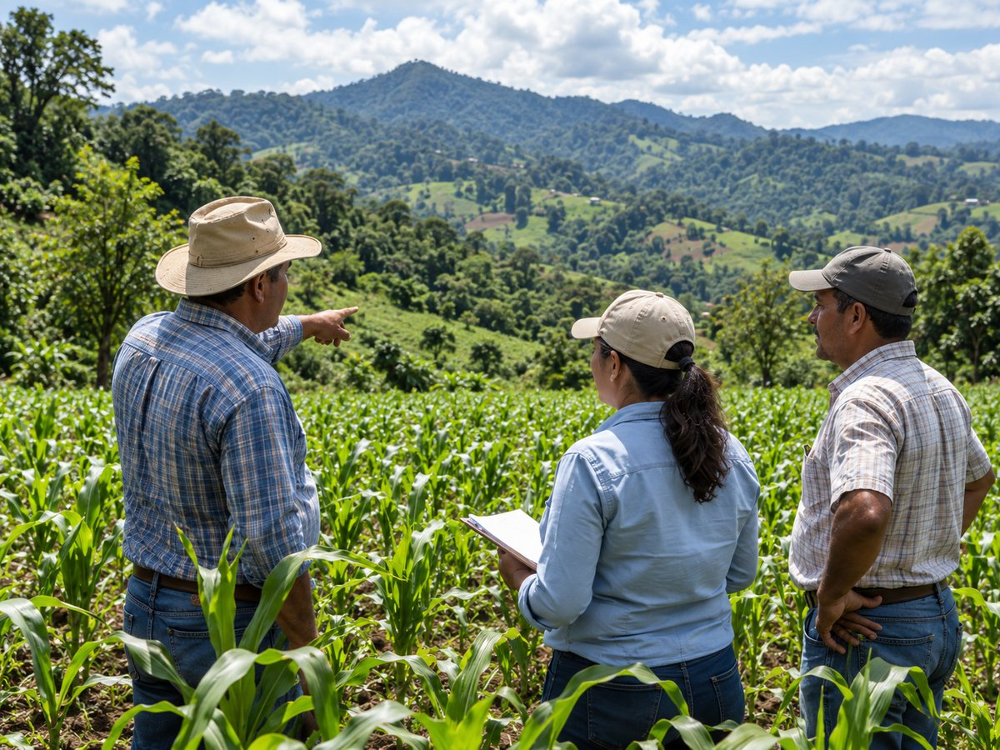

El sistema de vigilancia inteligente para la agricultura de Centroamérica y República Dominicana
Vigilancia permanente, basada en datos verificados, de la producción agropecuaria y la seguridad alimentaria de la región, para ver a tiempo y decidir a tiempo.
Herramientas para comprender la región
Información para el seguimiento de la agricultura y la seguridad alimentaria.
¿Qué es Vigía?
Un vigía es quien observa desde un punto alto para anticipar lo que se aproxima (una tormenta, una oportunidad, un riesgo) y dar aviso a tiempo para que otros puedan actuar. Ese es, literalmente, el propósito de esta plataforma: poner a disposición de los Ministerios y Secretarías de Agricultura de la región SICA una vigilancia permanente, basada en datos verificados, sobre el estado y la evolución de la producción agrícola y pecuaria y de la seguridad alimentaria.
Vigía es la plataforma digital que el IICA pone gradualmente a disposición de los países de la región.
No es un reporte estático ni un tablero decorativo. Vigía integra datos oficiales de cada país (producción, comercio, clima, mercados) con inteligencia artificial y métodos estadísticos robustos, para producir una lectura clara y verificable del panorama agroalimentario regional: qué está pasando, qué tan severo es, y qué ventana de tiempo tienen las autoridades para actuar antes de que una alerta se convierta en crisis.
Por qué existe
La región enfrenta simultáneamente variabilidad climática (El Niño / La Niña), dependencia de importaciones en rubros sensibles (arroz, maíz blanco, frijol, entre otros) y decisiones de política que no pueden esperar a que las cifras de cosecha estén cerradas. Vigía nace para cerrar esa brecha: llevar a los escritorios de decisión información temprana, trazable y con la misma base metodológica en los ocho países, de modo que las decisiones (de un ministerio o de la región en conjunto) se tomen sobre evidencia compartida y no sobre percepciones aisladas.
Cómo trabaja
Un principio no negociable rige todo lo que Vigía muestra: temperatura cero. Ningún dato se inventa, se estima a la ligera ni se rellena para que “se vea completo”. Cuando la información no existe o no está verificada, Vigía lo declara explícitamente en lugar de aparentar certeza que no tiene. Esa disciplina es lo que permite que ministerios, secretarías técnicas y actores de las cadenas confíen en lo que ven.
Datos oficiales
De cada país y de fuentes regionales e internacionales reconocidas.
Inteligencia artificial
Para procesar, cruzar y dar seguimiento a la información de forma continua.
Metodologías estadísticas robustas
Comunes a los ocho países, para comparar peras con peras entre naciones con distintos sistemas de registro.
Esta forma de trabajar no parte de cero. Se apoya en la capacidad técnica que el IICA ha construido a lo largo de décadas de presencia permanente en los ocho países de la región, y en una red de aliados regionales e internacionales que aporta lo que ninguna institución logra sola: organismos técnicos regionales con conocimiento de la institucionalidad agropecuaria centroamericana, servicios meteorológicos e hidrológicos nacionales y regionales para la lectura climática, y organismos internacionales de referencia que respaldan y contrastan la información. Vigía no reemplaza ese entramado técnico: lo organiza, lo hace comparable entre países y lo pone al servicio de la decisión pública en el momento oportuno.
Qué encontrará en Vigía
Vigía se construye como una familia creciente de herramientas, que se incorporan de forma gradual conforme cada módulo se valida con los países. Hoy ya está operativo el módulo de vigilancia de seguridad alimentaria; progresivamente se suman módulos para el monitoreo climático, el seguimiento de mercados internacionales, y el apoyo a la planificación y gestión de políticas, planes, programas y proyectos de los ministerios.
Construido con y para la región
Vigía es un desarrollo del IICA, construido con base a las representaciones del IICA y los ministerios / secretarías de agricultura de los ocho países de la región SICA.
No reemplaza el criterio técnico ni político de cada país: lo alimenta con información oportuna y comparable, para fortalecer la coordinación regional frente a los desafíos de la seguridad alimentaria.

“Ver a tiempo, para decidir a tiempo.”
Explore la colección
Recursos de capacitación
Los recursos de capacitación de Vigía se publicarán en esta sección.
En preparaciónDe dónde vienen los datos
Vigía integra datos oficiales de cada país y de fuentes regionales e internacionales reconocidas, junto con servicios meteorológicos e hidrológicos para la lectura climática. El detalle de fuentes y su periodicidad, por herramienta, se publicará en esta sección.
En preparación